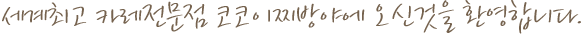
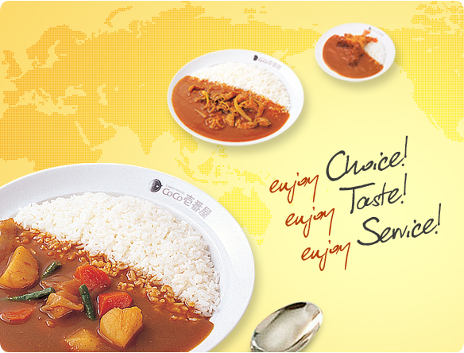

코코이찌방야는?
코코이찌방야는?


SINCE 1978
세계 No1. 카레전문점 코코이찌방야는1978년 일본에 처음 문을 열었습니다. 나고야市의 교외에서 작은 음식점을 운영하던 宗次德二(무네쯔구도쿠지)宗次直美(무네쯔구나오미)부부는 1970년대 1차 오일쇼크의 여파로 경제가 어려워져 신음하던 인근 주민들에게 자신들이 집에서 만들어 먹는 것과 같은 '가정적인 맛'의 카레를 제공해 큰 인기를 끌었습니다.
이를 바탕으로 다음 해 이제까지 운영하고 있던 음식점의 바로 옆에 "여기의 카레가 제일 맛있다", "카레라면 여기가 제일이다"라는 의미를 담아, 카레전문점 코코이찌방야 1호점을 창업하였습니다.
코코이찌방야에서는 창업 초기부터 <고객감사>의 절대적인 가치를 바탕으로 고객만족을 위해 '가정적인 맛의 카레', '고객이 스스로 선택하는 즐거움', '안전한 식품'을 고객에게 제공하고자 최선의 노력을 다하고 있습니다.
이렇게 시작된 코코이찌방야는 창업 초기부터 지금까지 끊임없이 고객만족을 추구하고 있으며 일본을 넘어 세계 속으로 뻗어나가기 위한 노력도 계속하고 있습니다.
그 결과 현재(2007년 12월) 일본에 총 1,131개의 점포와 함께 미국(4개점), 중국(8개점), 대만(3개점) 등 세계 속에 총 15개의 점포를 출점하고 성업중입니다.
마침내 2008년 코코이찌방야는 최고의 맛과 품질, 서비스를 가지고 한국 고객에게 첫선을 보이게 되었습니다.